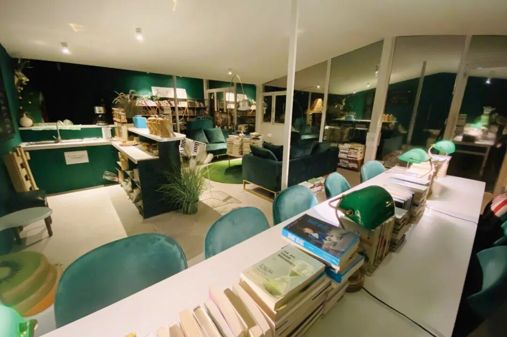

大冰的口碑逆转与千万人的情感刚需
时间：2026.05.22
作者：隋意
来源：南方人物周刊
真正值得注视的不是坐在屏幕前侃侃而谈的大冰，而是深夜涌进他直播间的数万名沉默的人。
2024年秋天，一名31岁的小伙子站在郑州一栋28层的高楼上，想要结束自己的生命。他连麦大冰，说“今天晚上我就走了”。从他伴着哽咽的、断续的讲述中，我们知道他长期被家暴——被父亲吊起来打、为反抗家暴打伤了父亲、在未成年人管教所遭到霸凌……他觉得人生真的太苦了，想跳下去，想解脱。
直播间的网友为小伙子揪心，也为大冰捏一把汗。这个曾经的电视节目主持人、畅销书作者、被群嘲的对象，四个月前刚刚开始在视频平台上与网友连麦聊天，他要怎么应对这样一个生死时刻？
大冰听着，没讲大道理，也没说什么安慰人的话，他说：既然地上待着不自在不舒坦，咱出海，去当海员。
他问出了对方所处的大致方位，提出“哪怕明天就走了，到了郑州先吃碗烩面”，顺势拉上来一位郑州本地的网友“老郭”，让“老郭”代替自己带小伙子去吃烩面，交代“加双份肉”。
烩面吃了，生活继续了下去。劝回轻生男孩的视频切片迅速传播，“吃碗烩面，乘船出海”成为大冰直播间流量井喷、风评向好的标志性事件。
2024年5月，大冰开始在快手平台直播，白天骑行，晚上与网友连麦。他一个人坐在手机前，与天南海北的人聊生活困境、职业选择、童年创伤……有时从午夜一直聊到凌晨五六点，话题涉及人生百态。
直播间的热度越来越高，在劝回轻生男子后不久，2024年10月，他宣布停播：“泼天富贵，镜花水月；莫等莫催，暂不开播；这波流量，无缘承接。”
停播43天后，大冰复播，迎来了更高的关注度。新榜数据显示，其复播一周内在快手平台涨粉超505万，位列当周快手涨粉榜首位，七天直播三场，每场在线人数峰值都突破10万。
截至2026年5月18日，大冰在快手单平台的粉丝数为902.9万。如今，他基本保持隔天直播一次的频率，晚9点半开播，经常播到后半夜，想连麦的网友说要排队几天才能连线成功。他的直播片段被制作成视频切片在各大平台分发，不少单条视频播放量超10万。
近期，大冰几次提及想在2026年夏天中断频繁的直播，他说“人无百日好”，对“泼天的流量”感到一些惶恐。我们无从得知他是否真的会这样做（他自己也说“话没说死”），以及背后的具体原因，但他持续两年的直播连麦以及超过他个人预期的流量是一个值得关注的现象。
在算法已经能精准捕捉用户需求并投其所好地推送娱乐产品的时代，为什么一个人坐在那里听陌生人讲述痛苦，会得到千万粉丝推崇？从那些连麦者的讲述以及在线网友的反馈中，可以看到普通人在当下时代的普遍困境，及对于被陪伴、被看见、被倾听的渴望。
大冰劝回轻生男孩
“走江湖跑码头的人”
大冰能劝回轻生男子的关键点，或许可以总结为他所说的“走江湖跑码头”六个字。
小伙子困在轻生的想法中，不想吃饭，不想见人。大冰说服他的方式是：“大家都是走江湖跑码头的人，互相得给个面子吧？你给不给我这个面子？”这句话把两个人放在了同样的位置——小伙子不是轻生者，大冰也不是他的救命稻草，迅速拉近了两个人的距离；再用“走江湖跑码头”这样小伙子能听得懂的语言，暂时搁置了他内心的苦楚和自杀的念头，唤起少年义气和江湖豪情。
这种混江湖、讲义气、给面子的形象，是大冰获得网友信任的第一步。他也确实有“走江湖”的经历，进入公众视野24年，不管是做媒体人，还是做背包客、酒吧老板，大冰一直没有脱离普通人的生活，积累了不同领域的生存智慧和朋友资源。
在“赛博树洞”这个赛道上，大冰不是唯一的主播。横向对比，张雪峰提供的是高度实用的升学就业指南，交付的是认知信息差，更加垂直；李诞提供的是解构型陪伴，给他写信的大多数人已经脱离了解决温饱的底层需求，他可以在插科打诨中剥离沉重感，进行一些“形而上”的对话。
大冰做出了区别性。首先，他选择的是快手这样相对“下沉”的平台，面向“残酷底层物语”，有网友在社交媒体上评论：“看他直播一天就受不了了，连麦的那些人太苦了。”在“众生皆苦”的连麦话题中，大冰展现出分析利弊、解决问题的实用主义特质，网友觉得“有忙他真帮”。第二，他的基本价值观正是被困住的当代人所需要的，比如反对人的工具化，拒绝用单一的社会阶层标准给人分类，对他人的痛苦有较强的理解和共情能力。这与多数互联网主播追求的凸显个性和猎奇不同。跟大冰连线的人叫他“冰哥”，他欣然应承。叫他“大冰老师”，他就表现得如坐针毡。来找他的网友带着各自的困苦，他要跟他们站在一起。同时他的直播间不带货、不开通打赏功能——他个人也以此为骄傲和谈资，这使得他更加符合大众心目中“拔刀相助”的江湖人形象，有一批愿意追随他的受众。
2024年9月，河南安阳的秦士芳连麦大冰，说自己六十多岁，想出去看看祖国的大好河山，“种完麦子，就往南走，在西双版纳过个冬天。”但她手里只有5000块钱，想骑着电动三轮车去云南，问大冰这个计划的可行性。大冰分析路线，盘山道、急下坡，还是要坐公共交通工具。直播结束后，大冰安排了“江湖上的兄弟们”，从河南安阳护送阿姨到机场，飞抵昆明后再由他当地的朋友接棒，带阿姨游玩，再护送她到达西双版纳。
“为啥要如此兴师动众呢？很简单，因为她是一个代表，代表着我们已然老去的父辈们，代表着我们曾经在田间耕作过的姑姑、婶儿、姨姨甚至是妈妈们。”大冰总结过他这么做的原因。
17岁的淄博女孩，因唯一的亲人、她的母亲去世而痛苦，已经两个多月没有与人交流。“好孩子，慢慢说，小朋友在我这儿有着最大的时间限度。”大冰发起线上帮助小组，为女孩寻找心理咨询师，找能帮助女孩出门办理休学的当地好心人，开导女孩不要为母亲的离世而谴责自己。大冰对孩子展现出的无限包容和理解为他收获了人气，网友留言称他为“互联网舅舅”，很多家长与他连麦请教教育问题。
除了这些可以被粗略概括为“善举”的行为，大冰在直播间里的另一个形象是“实用主义指南”。比如哈工大机器人运动控制博士询问大冰，在大厂、初创公司和公务员之间应该如何选择就业方向；比如1975年生的中年人，生了病在领低保，想要借3600块买辆电瓶车，大冰提出有借有还，立下五年之约，“连本带息还我3650元。”
做过主持人、写过畅销书，大冰的表达能力表现为直播间里频出的金句，他安慰面临婚育压力的人说，“人不是牲口，到了季节不应该被拉去配种”；他建议迷茫的年轻人，找不到方向先不用找方向，想不清楚种什么种子就先浇灌好土壤……他也用他的伶牙俐齿骂人，有不同意儿子与单亲妈妈谈恋爱的阿姨来连线，大冰直接开“怼”，评论区留言都为他的刻薄叫好。
更多来直播间的人不一定有迫切需要解决的问题，而是需要对话和精神支持，大冰经常说的那句“我在听”提供了莫大的安慰。在济南打工的农民连麦倾诉找工作的困难，说自己“没有活儿干”，大冰问他手头有没有“白将”（一种价格便宜的香烟），“我陪你抽一根。”直播间里人声安静下来，可以听到昆虫的叫声，两人讨论了一下虫子的品种，烟抽完了，大冰说，“祝你明天就能找到活儿干，早点回去睡觉吧。”
在一根烟的时间里，一个人让另一个人感受到陪伴，这或许可以解释为什么大冰的直播间热度居高不下，这种“空镜”式的陪伴不能根治什么，但在疼痛剧烈时，能让人好受一些。在一个情绪价值日益昂贵的时代，“被听见”本身就是稀缺品。他直播间里的网友，不都是在排队等待连线，而是在这里找到了自己的同温层，赛博空间里的共同体填补了现实生活中的孤单。有一位中年女性连线大冰说，她习惯失眠的时候打开大冰直播间，听着听着就睡着了。
大冰是谁？
2002年，22岁的大冰站上山东卫视《阳光快车道》的舞台。据公开资料，节目创办于2000年年初，是山东卫视在综艺浪潮中打出的一张王牌，创下全省收视第一的纪录，先后获得“星光奖”“金鹰奖”“金童奖”等国家级奖项。在当年的山东，它几乎是家家户户周六晚上的固定节目，设有《我是明星我怕谁》《三鹿超级小精灵》《奇人绝技榜中榜》等板块，内容涵盖时尚演艺、童真童趣、奇招绝活，邀请过黄渤、蔡依林、张杰等明星，将演播室文艺与外景小品相结合，节目效果生动、鲜活、接地气，在当时看来还是比较新鲜的。
大冰不是一入行就站在舞台中央的媒体人。他在山东出生长大，从山东艺术学院毕业后，他从美工、剧务做起，做过摄像、执行导演，跑了四年“龙套”，才成为电视台的主持人。在互联网尚未普及的年代，地方卫视是区域文化的重要载体，大冰凭借他的口音、幽默感、接地气的风格，以及出外景时能与父老相亲打成一片，成为山东观众心目中的“熟人”。在20年前的山东，他的名字几乎家喻户晓。
2011年前后，互联网重构媒体生态，地方电视台面临转型危机，大冰遭遇职场瓶颈，逐渐被边缘化，不管是出镜时长还是薪资都开始下降，他选择离开电视台，开始了“混江湖”的日子。写文章、开酒吧、骑行，地方明星走下舞台进入人群，同样需要面对没有钱的窘迫和生活的残酷。
“祝你阳光快车道”是大冰怀念在电视台奋斗的黄金年代时送给“老”观众朋友们的一句话。80后和90后长大了，大冰依然理解他们，因为他就是其中一员，从电视时代走进互联网时代的一代人，也从童年、青少年走到了直面现实的年纪。
因为这种同频，转型后的大冰成为了青年偶像。2013年，他出版第一本书《他们最幸福》。此后“小蓝书”系列以每年一本的速度问世：《乖，摸摸头》（2014）《阿弥陀佛么么哒》（2015）《好吗好的》（2016）《我不》（2017）《你坏》（2018）《小孩》（2019）。在《华西都市报》联合“作家榜”发布的第13届中国作家榜（2019年度）中，大冰以累计1500万版税位居第三，仅次于刘慈欣和余华。三年后，大冰于2022年出版《保重》，这是他最近的一本书。
这些书的结构大致相同，往往是大冰在一个遥远的地方遇到一个人，听了一段故事，交了一个朋友，然后把经历写下来。有一些苦难的底色，以及“有酒有梦”的江湖气和温情感，以此提供具体的、可供想象的活法：诗与远方，流浪、艳遇、顿悟，从城市遁入雪山。
这与当时市面上常见的励志书和旅行文学都不太一样。从书名来看，大冰的作品很难被定义为严肃的存在，比如《阿弥陀佛么么哒》这类乍一看不明所以的名字。大冰曾解释过这与他的信仰有关，既然“发了心”就想做这件事，加入“么么哒”是想用流行文化里轻松的东西来“软化”一些沉重的命题。
21世纪的第二个十年，“奋斗改变命运”的叙事尚有市场，经济高速增长的余温还在，90后刚刚步入社会，“诗与远方”还是一种正当的精神消费。大冰的书没有文学意义上的“深度”，但是提供了心理意义上的“出口”，初入职场的、迷茫的年轻人，可以在他的文字里走一趟远方。
解构大冰
大冰的风评在2019年前后渐渐出现了异样。起初批评者只是点评他的书，说他的文字矫情、造作，文学造诣“无限逼近于零”；说他写的是“鸡汤”，高频词汇只有流浪、姑娘、吉他、民谣、背包客，“说几句话就空一行，200页的书硬写到400页。”
接着，当年的读者也开始“脱粉回踩”，社交媒体上经常有一种声音是，与过去的自己割席，羞于承认书架上曾摆满了“小蓝书”、曾视大冰为精神偶像。彼时，第一批90后即将迈入30岁，面对真实的房贷、育儿和加班，“诗与远方”不再适配他们的生活，反而成了人被现实困住的提醒，大冰的存在从慰藉变成了讽刺。
当时的互联网青年社区话语权上升，年轻人开始大规模“祛魅”，此前被捧上神坛的一众文化人物遭遇翻旧账式的集体解构。“冰学”的背后，是“解构一切”的互联网氛围和极高的二创热情，类似的还有“晚学”“明学”以及近年的“春山学”等等。
2023年前后，豆瓣上的一篇名为《大冰获得诺贝尔文学奖的原因》流传，“冰学”真正爆发。据网友整理，“冰学”下设不同分支：有对大冰过往文字进行分析解构的“文学课堂”，也有以“大冰人设”为基础的“数学分支”。
大冰印在书上的那一长串作者身份标签，在“解构一切”的浪潮里几乎是完美的靶子：作家、主持人、民谣歌手、油画画师、手鼓艺人、皮匠、银匠、背包客、黄金左脸、法国骑士、禅宗弟子……这些称号在互联网的语境中，因自恋的意味而被反感，“冰学”段子里最经典的“1大冰=13人”衍生出虚构场景：大冰深夜敲门借宿，大爷问门外有谁，他一口气报出13个身份，大爷惊呼“住不下这么些人”。
大冰因一代读者的情感需求被高高举起，又被互联网时代重重摔下，成为人人皆可嘲讽的对象——尽管他写的东西可能没什么变化。大冰的“塌房”不是一桩个人事件，而是一种时代情绪。当KOL的权威瓦解，偶像跌落，一切“人设”都要被审视。“斜杠青年”、“文艺青年”等曾经的褒义词语都变了味儿。
大冰没有公开辩解过，直到2024年通过直播间完成了口碑逆转。

2020年，云南大理，“大冰的小屋”24小时免费阅读室
“现代文化现象”
为什么“翻盘”来得如此突然？
出版人路金波说自己看过大冰很多直播切片，“简直是现代的文化现象。”“现代文化现象”可以大致概括大冰直播间的独特性，它不是策划出来的，而是自然生长出来的社会现场。连麦故事覆盖了几乎所有年龄段的人的困境，五年级小孩被老师冷落、二十出头失恋、三十岁问“一事无成，生活的意义是什么”、四十岁重病不知如何面对死亡……大冰给他们答疑解惑，视频片段在全平台持续传播了快两年，制造了互联网时代罕见的长尾效应。
如果换一个时间节点，大冰的直播间恐怕很难实现今天这样的影响力。文化消费不会凭空冒出来，它是社会情绪最直接的投射。回头看大冰的职业生涯，每一个节点都刚好验证了这一点。
2013年到2018年，大冰“小蓝书”系列卖得最好的时期，人们还相信努力可以改变处境，而大冰写的“理想中的人生”正是这种信念的折射：是一个承平日久的时代里大家拼搏奋斗之余的精神甜品。
新冠疫情前，主流文化圈和出版行业还有相当的话语权，“文学表达的高级感”仍是评判标准，大冰那串长长的标签和作品中并不高深的文学造诣卷入社交媒体兴起的“祛魅”风潮，被审视被解构被调侃，彼时大众尚且有心力去争论什么是好的文学作品、什么样的人有资格成为文化榜样。
2023年3月11日，山东潍坊，大冰在新书 《保重》 签售会上与读者握手交流
2024年，大冰在快手开播时，疫情防控的特殊时期结束，但社会运转并未如普通人想象的那样全面转好。“躺平”、“全职儿女”成为青年人中的热词，中产则默默接受了消费降级，全网寻找“平替”。
当经济增速放缓，普通人的上升通道收窄，精神危机成为时代症候。2026年3月，北京安定医院的精神科医生姜涛接受澎湃新闻采访时说，“无论是在权力结构中处于弱势的群体，还是游走在灰色地带的社会精英，都在承受着不同形式的精神压力。”
当人的需求从追求精神奖赏变成了“谁能告诉我怎么办”时，大冰的直播间提供了一个零成本的方案：年过不惑的他不再开出“诗与远方”的解药，而成了“现实困境”的临时容器。他给的不是梦想，是具体的路线地图，从安阳到西双版纳该走哪条路，就业道路该怎么选，媳妇与公公合不来的时候该怎么调解。这些回答不需要文学性，也没有多么励志，甚至不一定正确，但是人们需要这样实实在在的说明书。
身陷困境的个体在身边找不到成熟的“社会援手”，网络的开放性则集成了一个“知识库”，成为人们寻找答案的第一选择，万一有个人恰好懂门路，恰好有资源，就更好了——大冰有意或无意地，成了这个人。他甚至没想到当今社会被倾听、被共情的需求如此庞大，以至于自己只需要在那里坐上一会儿说几句话，就能成为千万人的“救生艇”。
当然，批评的声音一直都有。比如有人骂他作秀，质疑连麦有剧本，批评他的态度像“圣人”；比如他在教男性如何挽回妻子时，虽然尽量使用得体的语言，但从女性立场来看依然会感受到不被尊重；再比如有女性连麦向他表白，他努力隐藏自己的上位者身份，还是说出了“我不喜欢你，除非你是一辆摩托车”这种物化女性的语言。 如同被群嘲时一样，大冰没有做出任何实质性的回应。或许因为亲身体验过什么叫“人无千日好”，他才提出主动停播。
“大冰现象”从来都不是大冰本身。成就他或抛下他的是“时也势也”。大冰直播间里真正值得注视的不是坐在屏幕前侃侃而谈的大冰，而是深夜涌进他直播间的数万名沉默的人。